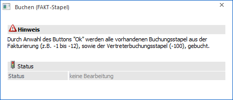

Im Belegerfassen werden automatisch 12 Buchungsstapel gebildet, die beim Drucken bzw. Rechnen der Faktura direkt in die FIBU übergeben werden. Dabei muss kein weiterer Menüpunkt angewählt werden. In der WinLine FIBU im Menüpunkt…
1 Buchen
1 Buchen
1 Dialog - Stapel
… wird der jeweilige Buchungsstapel geladen und kann eventuell vor dem Buchen noch editiert werden.
Wenn Sie die Buchungsstapel vor dem Buchen nicht mehr editieren möchten, haben Sie die Möglichkeit alle bestehenden Stapel in der WinLine FIBU im Menüpunkt…
1 Buchen
1 Buchen
1 FAKT-Stapel
… zu buchen.

Achtung
Alle Änderungen, die dabei gemacht wurden, haben auf die FAKT keine Auswirkungen mehr.
Die in der Fakturierung erzeugten Buchungsstapel enthalten nach Perioden sortierte Buchungen.
ü -1 Stapel = Stapel aus der Periode Januar
ü -2 Stapel = Stapel aus der Periode Februar
ü -3 Stapel = Stapel aus der Periode März
ü -4 Stapel = Stapel aus der Periode April
ü etc.
KORE Buchungen in der Belegerfassung
Im Zuge der Belegerfassung werden auch Kore-Buchungen durchgeführt. Diese Buchungen werden sowohl für die Erlöse als auch für die Kosten (Wareneinsatz) gebildet und werden über den Buchungsstapel in die FIBU übergeben. Der Kostenträger/Kostenart wird im Personenkonto hinterlegt. Die Kostenstelle kommt aus der Belegart, kann aber pro Artikelzeile noch übersteuert werden. Die Kostenart kann noch durch die Belegart übersteuert werden.
Die Werte für die KORE werden im Zuge der FIBU-Buchungen mit gebucht. Es muss kein separater Übernahmelauf durchgeführt werden.
Buttons

Ø Ok
Durch Anwahl des Buttons "Ok" bzw. der Taste F5 werden die WinLine FAKT-Stapel in der WinLine FIBU gebucht.
Ø Ende
Durch Anwahl des Buttons "Ende" bzw. der Taste ESC wird das Fenster geschlossen.